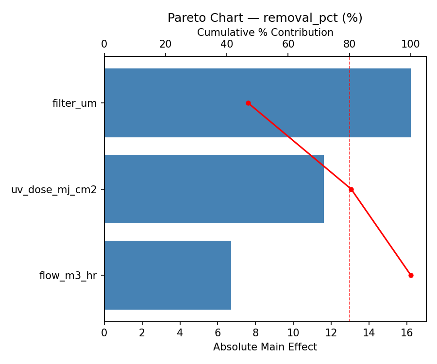
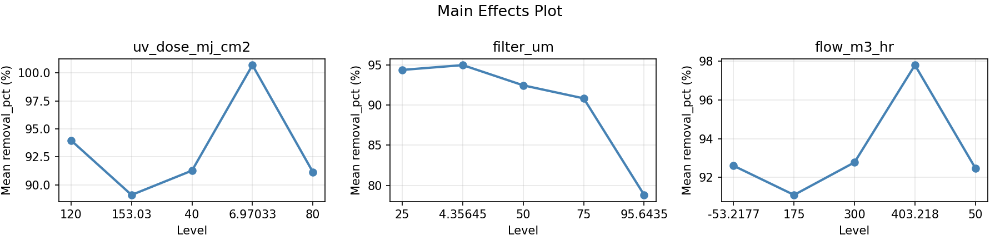
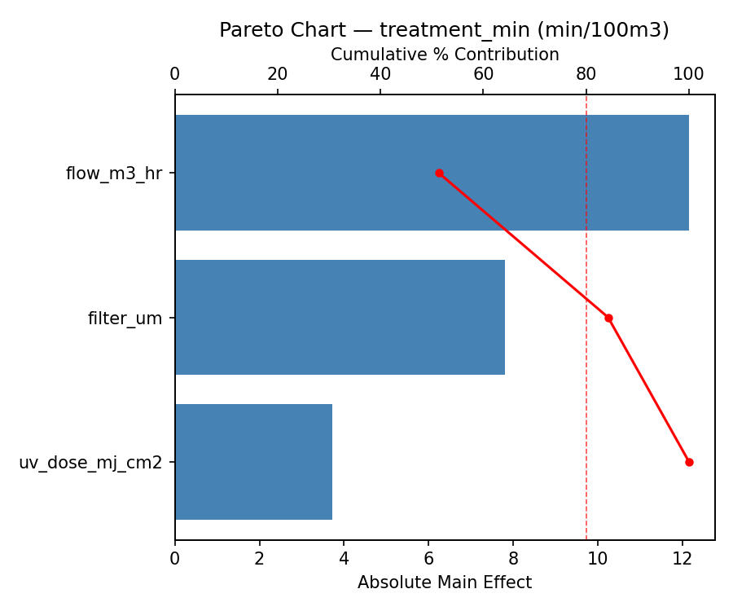
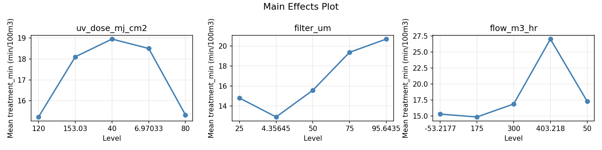
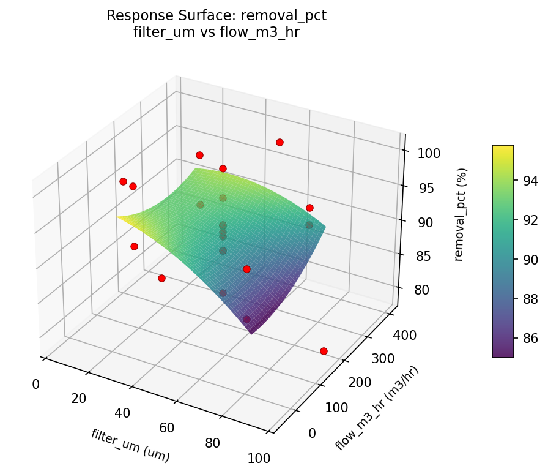
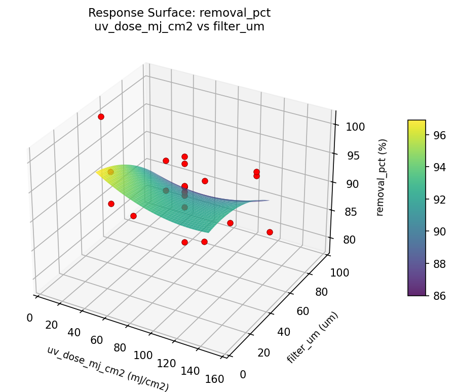
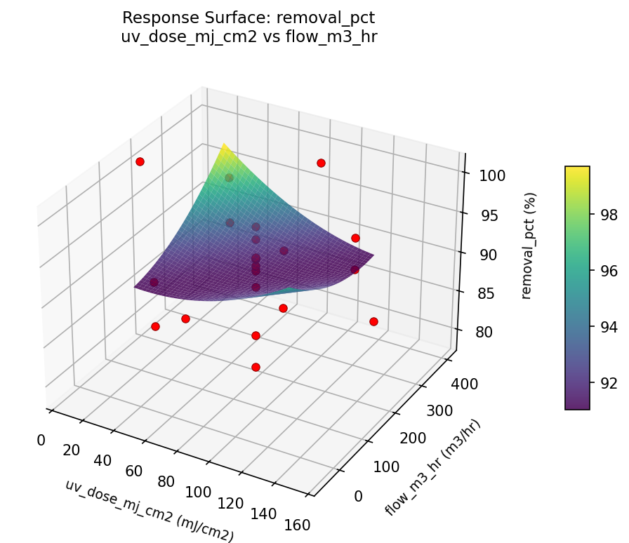
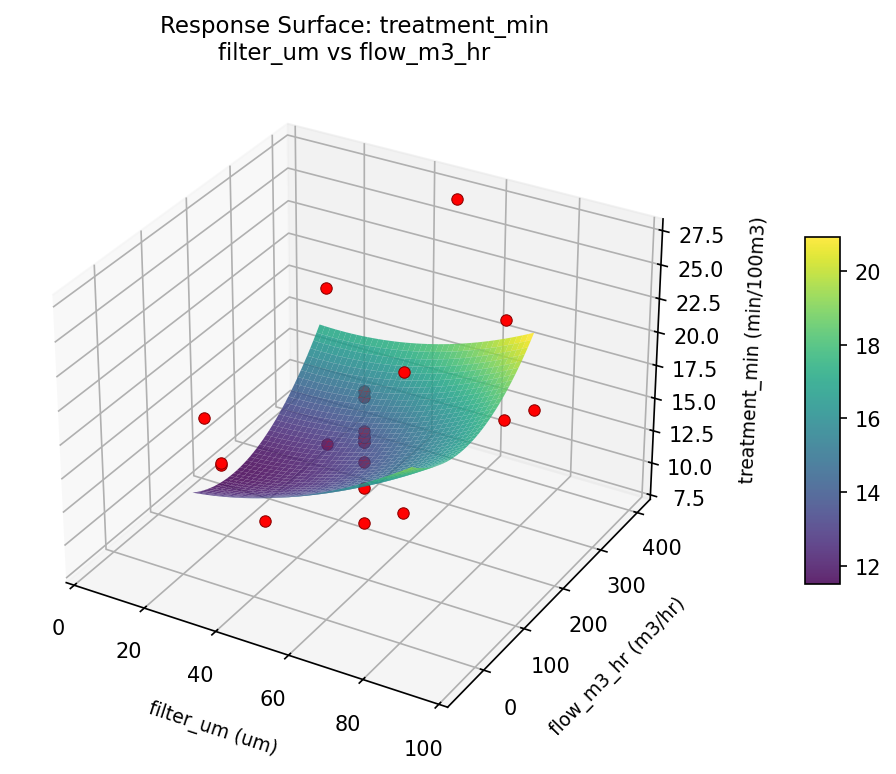
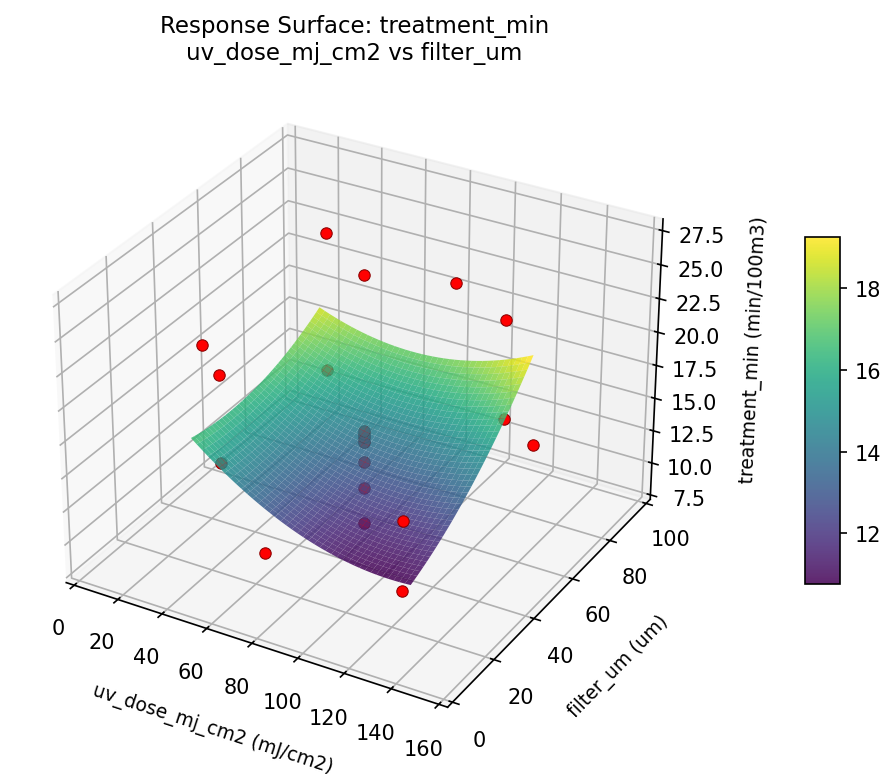
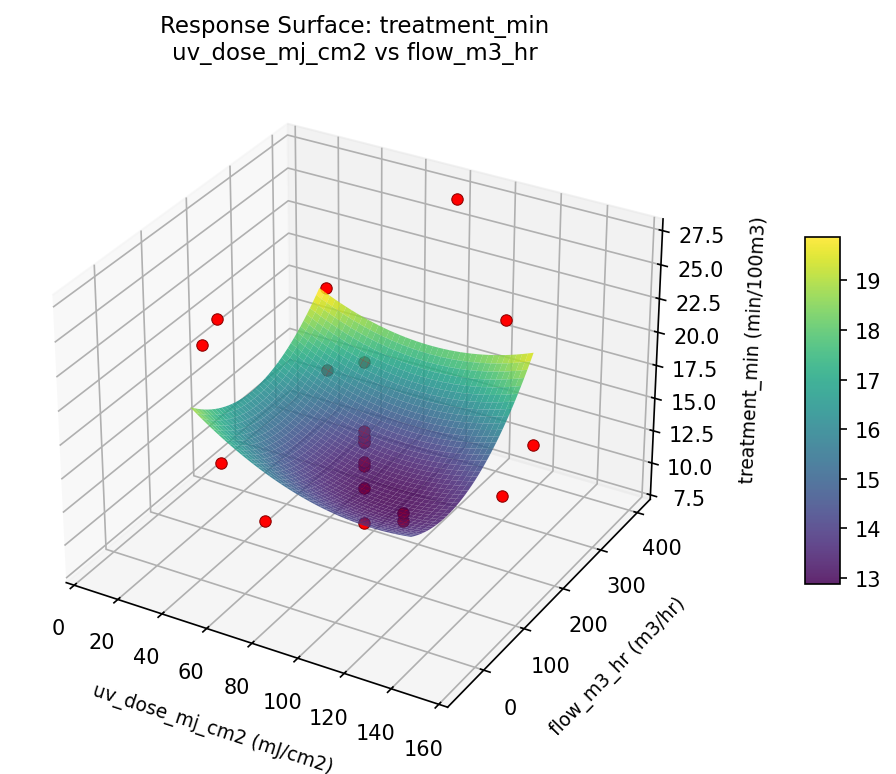

Summary
This experiment investigates ballast water treatment. Central composite design to maximize organism removal and minimize treatment time by tuning UV dose, filtration pore size, and flow rate.
The design varies 3 factors: uv dose mj cm2 (mJ/cm2), ranging from 40 to 120, filter um (um), ranging from 25 to 75, and flow m3 hr (m3/hr), ranging from 50 to 300. The goal is to optimize 2 responses: removal pct (%) (maximize) and treatment min (min/100m3) (minimize). Fixed conditions held constant across all runs include vessel = bulk_carrier, regulation = IMO_D2.
A Central Composite Design (CCD) was selected to fit a full quadratic response surface model, including curvature and interaction effects. With 3 factors this produces 22 runs including center points and axial (star) points that extend beyond the factorial range.
Quadratic response surface models were fitted to capture potential curvature and factor interactions. The RSM contour plots below visualize how pairs of factors jointly affect each response.
Key Findings
For removal pct, the most influential factors were filter um (46.9%), uv dose mj cm2 (33.6%), flow m3 hr (19.4%). The best observed value was 100.7 (at uv dose mj cm2 = 80, filter um = 4.35645, flow m3 hr = 175).
For treatment min, the most influential factors were flow m3 hr (51.3%), filter um (32.9%), uv dose mj cm2 (15.7%). The best observed value was 8.5 (at uv dose mj cm2 = 80, filter um = 50, flow m3 hr = 403.218).
Recommended Next Steps
- Run confirmation experiments at the predicted optimal settings to validate the model.
- Consider whether any fixed factors should be varied in a future study.
Experimental Setup
Factors
| Factor | Low | High | Unit |
|---|
uv_dose_mj_cm2 | 40 | 120 | mJ/cm2 |
filter_um | 25 | 75 | um |
flow_m3_hr | 50 | 300 | m3/hr |
Fixed: vessel = bulk_carrier, regulation = IMO_D2
Responses
| Response | Direction | Unit |
|---|
removal_pct | ↑ maximize | % |
treatment_min | ↓ minimize | min/100m3 |
Configuration
{
"metadata": {
"name": "Ballast Water Treatment",
"description": "Central composite design to maximize organism removal and minimize treatment time by tuning UV dose, filtration pore size, and flow rate"
},
"factors": [
{
"name": "uv_dose_mj_cm2",
"levels": [
"40",
"120"
],
"type": "continuous",
"unit": "mJ/cm2"
},
{
"name": "filter_um",
"levels": [
"25",
"75"
],
"type": "continuous",
"unit": "um"
},
{
"name": "flow_m3_hr",
"levels": [
"50",
"300"
],
"type": "continuous",
"unit": "m3/hr"
}
],
"fixed_factors": {
"vessel": "bulk_carrier",
"regulation": "IMO_D2"
},
"responses": [
{
"name": "removal_pct",
"optimize": "maximize",
"unit": "%"
},
{
"name": "treatment_min",
"optimize": "minimize",
"unit": "min/100m3"
}
],
"settings": {
"operation": "central_composite",
"test_script": "use_cases/260_ballast_water/sim.sh"
}
}
Experimental Matrix
The Central Composite Design produces 22 runs. Each row is one experiment with specific factor settings.
| Run | uv_dose_mj_cm2 | filter_um | flow_m3_hr |
|---|
| 1 | 80 | 50 | 175 |
| 2 | 120 | 25 | 300 |
| 3 | 40 | 75 | 50 |
| 4 | 80 | 95.6435 | 175 |
| 5 | 80 | 50 | 175 |
| 6 | 6.97033 | 50 | 175 |
| 7 | 80 | 50 | -53.2177 |
| 8 | 80 | 50 | 175 |
| 9 | 120 | 75 | 50 |
| 10 | 153.03 | 50 | 175 |
| 11 | 80 | 50 | 175 |
| 12 | 80 | 4.35645 | 175 |
| 13 | 80 | 50 | 175 |
| 14 | 40 | 25 | 300 |
| 15 | 80 | 50 | 175 |
| 16 | 120 | 25 | 50 |
| 17 | 80 | 50 | 403.218 |
| 18 | 120 | 75 | 300 |
| 19 | 80 | 50 | 175 |
| 20 | 40 | 25 | 50 |
| 21 | 40 | 75 | 300 |
| 22 | 80 | 50 | 175 |
Step-by-Step Workflow
1
Preview the design
$ python doe.py info --config use_cases/260_ballast_water/config.json
2
Generate the runner script
$ python doe.py generate --config use_cases/260_ballast_water/config.json \
--output use_cases/260_ballast_water/results/run.sh --seed 42
3
Execute the experiments
$ bash use_cases/260_ballast_water/results/run.sh
4
Analyze results
$ python doe.py analyze --config use_cases/260_ballast_water/config.json
5
Get optimization recommendations
$ python doe.py optimize --config use_cases/260_ballast_water/config.json
6
Generate the HTML report
$ python doe.py report --config use_cases/260_ballast_water/config.json \
--output use_cases/260_ballast_water/results/report.html
Features Exercised
| Feature | Value |
|---|
| Design type | central_composite |
| Factor types | continuous (all 3) |
| Arg style | double-dash |
| Responses | 2 (removal_pct ↑, treatment_min ↓) |
| Total runs | 22 |
Analysis Results
Generated from actual experiment runs using the DOE Helper Tool.
Response: removal_pct
Top factors: filter_um (46.9%), uv_dose_mj_cm2 (33.6%), flow_m3_hr (19.4%).
Pareto Chart

Main Effects Plot

Response: treatment_min
Top factors: flow_m3_hr (51.3%), filter_um (32.9%), uv_dose_mj_cm2 (15.7%).
Pareto Chart

Main Effects Plot

Response Surface Plots
3D surfaces fitted with quadratic RSM. Red dots are observed data points.
removal pct filter um vs flow m3 hr

removal pct uv dose mj cm2 vs filter um

removal pct uv dose mj cm2 vs flow m3 hr

treatment min filter um vs flow m3 hr

treatment min uv dose mj cm2 vs filter um

treatment min uv dose mj cm2 vs flow m3 hr

Full Analysis Output
RSM surface: rsm_removal_pct_uv_dose_mj_cm2_vs_filter_um.png
RSM surface: rsm_removal_pct_uv_dose_mj_cm2_vs_flow_m3_hr.png
RSM surface: rsm_removal_pct_filter_um_vs_flow_m3_hr.png
RSM surface: rsm_treatment_min_uv_dose_mj_cm2_vs_filter_um.png
RSM surface: rsm_treatment_min_uv_dose_mj_cm2_vs_flow_m3_hr.png
RSM surface: rsm_treatment_min_filter_um_vs_flow_m3_hr.png
=== Main Effects: removal_pct ===
Factor Effect Std Error % Contribution
--------------------------------------------------------------
filter_um 16.2000 1.0898 46.9%
uv_dose_mj_cm2 11.6000 1.0898 33.6%
flow_m3_hr 6.7083 1.0898 19.4%
=== Summary Statistics: removal_pct ===
uv_dose_mj_cm2:
Level N Mean Std Min Max
------------------------------------------------------------
120 4 93.9750 4.2571 89.6000 99.8000
153.03 1 89.1000 0.0000 89.1000 89.1000
40 4 91.2750 4.4925 85.8000 96.8000
6.97033 1 100.7000 0.0000 100.7000 100.7000
80 12 91.1417 5.4202 78.8000 97.8000
filter_um:
Level N Mean Std Min Max
------------------------------------------------------------
25 4 94.4000 4.7244 89.6000 99.8000
4.35645 1 95.0000 0.0000 95.0000 95.0000
50 12 92.4750 4.5743 82.9000 100.7000
75 4 90.8500 3.5275 85.8000 93.6000
95.6435 1 78.8000 0.0000 78.8000 78.8000
flow_m3_hr:
Level N Mean Std Min Max
------------------------------------------------------------
-53.2177 1 92.6000 0.0000 92.6000 92.6000
175 12 91.0917 5.8170 78.8000 100.7000
300 4 92.7750 3.1500 89.6000 96.8000
403.218 1 97.8000 0.0000 97.8000 97.8000
50 4 92.4750 5.7604 85.8000 99.8000
=== Main Effects: treatment_min ===
Factor Effect Std Error % Contribution
--------------------------------------------------------------
flow_m3_hr 12.1500 0.9989 51.3%
filter_um 7.8000 0.9989 32.9%
uv_dose_mj_cm2 3.7250 0.9989 15.7%
=== Summary Statistics: treatment_min ===
uv_dose_mj_cm2:
Level N Mean Std Min Max
------------------------------------------------------------
120 4 15.2250 5.4689 9.1000 22.4000
153.03 1 18.1000 0.0000 18.1000 18.1000
40 4 18.9500 5.1319 14.6000 25.2000
6.97033 1 18.5000 0.0000 18.5000 18.5000
80 12 15.3250 4.6720 8.5000 27.0000
filter_um:
Level N Mean Std Min Max
------------------------------------------------------------
25 4 14.8000 4.9119 9.1000 21.1000
4.35645 1 12.9000 0.0000 12.9000 12.9000
50 12 15.5750 4.4961 8.5000 27.0000
75 4 19.3750 5.2360 14.9000 25.2000
95.6435 1 20.7000 0.0000 20.7000 20.7000
flow_m3_hr:
Level N Mean Std Min Max
------------------------------------------------------------
-53.2177 1 15.3000 0.0000 15.3000 15.3000
175 12 14.8500 3.2873 8.5000 20.7000
300 4 16.8750 6.1299 9.1000 22.4000
403.218 1 27.0000 0.0000 27.0000 27.0000
50 4 17.3000 5.2726 14.4000 25.2000
Pareto chart (removal_pct): use_cases/260_ballast_water/results/analysis/pareto_removal_pct.png
Pareto chart (treatment_min): use_cases/260_ballast_water/results/analysis/pareto_treatment_min.png
Main effects (removal_pct): use_cases/260_ballast_water/results/analysis/main_effects_removal_pct.png
Main effects (treatment_min): use_cases/260_ballast_water/results/analysis/main_effects_treatment_min.png
Optimization Recommendations
=== Optimization: removal_pct ===
Direction: maximize
Best observed run: #16
uv_dose_mj_cm2 = 80
filter_um = 4.35645
flow_m3_hr = 175
Value: 100.7
RSM Model (linear, R² = 0.4567, Adj R² = 0.3661):
Coefficients:
intercept +92.0227
uv_dose_mj_cm2 +0.3528
filter_um -2.5859
flow_m3_hr +3.2054
RSM Model (quadratic, R² = 0.8024, Adj R² = 0.6542):
Coefficients:
intercept +91.7543
uv_dose_mj_cm2 +0.3528
filter_um -2.5859
flow_m3_hr +3.2054
uv_dose_mj_cm2*filter_um +1.2250
uv_dose_mj_cm2*flow_m3_hr -3.9750
filter_um*flow_m3_hr +1.0750
uv_dose_mj_cm2^2 -0.1808
filter_um^2 +1.2142
flow_m3_hr^2 -0.6308
Curvature analysis:
filter_um coef=+1.2142 convex (has a minimum)
flow_m3_hr coef=-0.6308 concave (has a maximum)
uv_dose_mj_cm2 coef=-0.1808 concave (has a maximum)
Notable interactions:
uv_dose_mj_cm2*flow_m3_hr coef=-3.9750 (antagonistic)
uv_dose_mj_cm2*filter_um coef=+1.2250 (synergistic)
filter_um*flow_m3_hr coef=+1.0750 (synergistic)
Predicted optimum (from quadratic model):
uv_dose_mj_cm2 = 40
filter_um = 25
flow_m3_hr = 300
Predicted value: 101.7204
Model quality: Good fit — general trends are captured, some noise remains.
Factor importance:
1. flow_m3_hr (effect: 13.7, contribution: 47.7%)
2. filter_um (effect: 11.2, contribution: 38.9%)
3. uv_dose_mj_cm2 (effect: 3.9, contribution: 13.5%)
=== Optimization: treatment_min ===
Direction: minimize
Best observed run: #2
uv_dose_mj_cm2 = 80
filter_um = 50
flow_m3_hr = 403.218
Value: 8.5
RSM Model (linear, R² = 0.1535, Adj R² = 0.0124):
Coefficients:
intercept +16.2364
uv_dose_mj_cm2 -0.6458
filter_um -0.6346
flow_m3_hr -2.0011
RSM Model (quadratic, R² = 0.5255, Adj R² = 0.1696):
Coefficients:
intercept +19.0903
uv_dose_mj_cm2 -0.6458
filter_um -0.6346
flow_m3_hr -2.0011
uv_dose_mj_cm2*filter_um -1.8875
uv_dose_mj_cm2*flow_m3_hr -0.5125
filter_um*flow_m3_hr -0.8625
uv_dose_mj_cm2^2 -1.8770
filter_um^2 -0.4520
flow_m3_hr^2 -1.9520
Curvature analysis:
flow_m3_hr coef=-1.9520 concave (has a maximum)
uv_dose_mj_cm2 coef=-1.8770 concave (has a maximum)
filter_um coef=-0.4520 concave (has a maximum)
Notable interactions:
uv_dose_mj_cm2*filter_um coef=-1.8875 (antagonistic)
filter_um*flow_m3_hr coef=-0.8625 (antagonistic)
uv_dose_mj_cm2*flow_m3_hr coef=-0.5125 (antagonistic)
Predicted optimum (from quadratic model):
uv_dose_mj_cm2 = 80
filter_um = 50
flow_m3_hr = 175
Predicted value: 19.0903
Model quality: Moderate fit — use predictions directionally, not precisely.
Factor importance:
1. flow_m3_hr (effect: 9.1, contribution: 43.7%)
2. uv_dose_mj_cm2 (effect: 8.3, contribution: 40.0%)
3. filter_um (effect: 3.4, contribution: 16.4%)